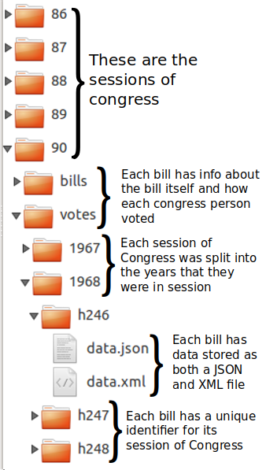

We (Anne, Pratool, and Zoher) decided to dive into the workings American government — that is to learn more about the bills that come up in the House of Representatives and the Senate and learn more about these elected officials. We hope to make a data driven tool that allows one to explore the data online in an unbiased, unannotated way. With this tool, we intend to provide our own analysis of the data in a data-journalistic manner.
View the Project on GitHub dinopants174/DataScienceFinalProject
Going into this project, we knew that a lot of the data about bills brought up in Congress were on the official government websites Congress.gov and Senate.gov. These websites also included information on all of the Congress people elected into office. However, after a bit of research, we found that there was a website, called GovTrack, that was not officially affiliated with the U.S. government in which the data was much more easily accessible.
Upon looking further into govtrack, we found that they actual offer all their data free to the public, and provided easy ways to direct-download their files, and a large amount of documentation on their GitHub repository.
Although incredibly helpful, the GovTrack data revealed itself on further investigation to be less convenient than it appeared. The data comes in the form of over 100GB of individual json files for each bill, amendment, and vote to ever happen in Congress. What we want is not individual files for each vote, but rather a CSV file per session of congress containing a row for each vote and its information.
This required a lot of parsing through the data to get it in the format we wanted. It didn’t help that a lot of the data in govtrack’s files is missing or inconsistent. Affirmative votes could be labeled as “Yea" or “Aye" depending on the year, not all fields exist for all congresses, and almost all the information we care about (even the result of the vote!) is marked as unknown for the early years of congress.
Additionally, we downloaded over 100GB of files onto our external hard drive (a process that took several slow internet connections and several days), but the majority of that data is information that we don’t care about. We’ve decided to only track “passage" votes and amendments, which pass bills or amend them. But our data also contains other types of votes, such as nominations or clotures, which are not relevant to our explorations of the data.
Therefore, a large part of what we have spent time on so far is downloading files and creating a script that turns them into CSV files. As we ran this script through more sessions of congress, we continued to find esoteric errors where data was randomly stored in a different format or a json file was missing a key.
The entire process was very slow, because we have so much data. Additionally, because the data is not stored locally but instead on our external hard drive, just reading and writing thousands of files when creating each CSV file took a long time.
Once we created all the CSV files, the next step was to go through each individual bill for deeper information. For most votes, they had a corresponding json file in a separate folder that gave us deeper information about it: the subject, the title, the sponsor, etc. In particular, storing the subjects for each bill was an unwieldy process. A bill can have any number of subjects that it covers, from one to over a hundred. We didn’t want to store these in a list in a single column of the CSV, because then we would be, for example, unable to select all bill that had to do with a certain subject without looping through all bills and parsing its list of subjects. So to combat this, we decided to first do a cursory search through all the bills in a session of congress. Then, we create a column in our CSV for each subject and populate each row with 1s and 0s for the subjects if a given bill pertains to that subject.
We used the same process when getting our data on legislators. Govtrack’s data on legislators was already more organized, and came in a CSV file for us, with data on every congressperson ever, their date of birth, party, and more. However, it did not actually tell us when they served in congress. To solve this, we cross-referenced each voter in each session of congress with their row in the legislators data file, and then created columns for each session of congress, and marked a boolean value for each legislator corresponding to whether or not they were present in that session of congress. From this, we can easily see data about people per session as well as how many sessions a single person was in.
As of writing this, we are completing the creating of our final CSV files that include subjects and detailed data. When this is completed, we can consider ourselves done with data collection for now. We’ve been setting up a SQL server and will upload all our CSV files there, and then have easy access to our data going into the next stage of exploration and planning what we specifically want to visualize and create for our final deliverable.